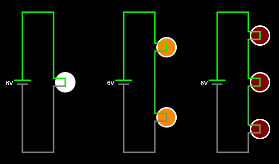
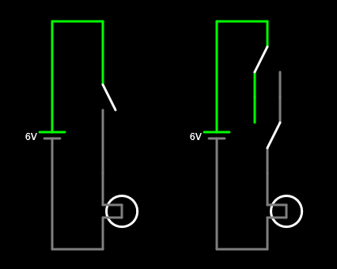

2. Conexión en serie¶
Dos componentes están en serie si están conectados uno detrás de otro en la misma rama de un circuito.
La conexión en serie tiene la propiedad de sumar la tensión de los generadores y de repartir la tensión entre los receptores. Cuando se retira (o se estropea) uno de los elementos de una conexión en serie, la corriente deja de circular y el circuito se apaga.
Generadores en serie¶
Los generadores en serie suman sus tensiones para poder conseguir tensiones mayores. La mayoría de las pilas eléctricas tienen una tensión inferior a 4 voltios, de manera que se juntan en serie para conseguir tensiones mayores.
Por ejemplo la batería tradicional de un automóvil de gasolina tiene 6 pilas de plomo de 2 voltios cada una, consiguiendo así los 12 voltios totales típicos de estas baterías.
Las pilas que forman la batería de un automóvil eléctrico tienen 3,6 voltios cada una y se colocan en serie para conseguir cientos de voltios, necesarios para mover el motor eléctrico.
Simula en el simulador online los siguientes circuitos con generadores en serie para ver cómo afecta la suma de tensiones a la lámpara:

Cuantas más pilas colocamos en serie, más tensión tiene el circuito y más se enciende la lámpara.
Nota
Para conseguir que las pilas tengan sólo 1.5 voltios (la tensión típica
de una pila alcalina), es necesario clicar doble sobre la pila o clicar
con el botón derecho del ratón sobre la pila y escoger Editar:

En el cuadro de diálogo Tensión cambiaremos el valor a 1.5 (con punto en vez de coma) y terminaremos clicando en el botón OK.
Receptores en serie¶
Los receptores en serie se reparten la tensión total del generador de manera que cuantos más elementos se coloquen en serie, menos tensión tendrá cada uno.
Simula en el simulador online los siguientes circuitos con lámparas en serie para ver cómo afecta a la tensión de cada lámpara:

Cuando el circuito tiene solamente una lámpara, esta recibe toda la tensión del generador y por lo tanto luce al máximo.
Cuando el circuito tiene dos lámparas en serie, cada una recibe la mitad de la tensión del generador, por lo que se iluminan menos.
Por último cuando el circuito tiene tres lámparas en serie, cada una recibe una tercera parte de la tensión del generador, por lo que apenas se iluminan.
Si ahora arrastramos una de las lámparas en serie para quitarla del circuito, podemos comprobar cómo todo el circuito deja de funcionar. Para que un circuito en serie funcione, todos sus elementos deben permitir el paso de la corriente:

Interruptores en serie¶
Los interruptores sirven para controlar el paso de corriente a través de los receptores. Por esa razón, los interruptores se conectan siempre en serie con los receptores que se quiere controlar. Al estar en serie, cuando el interruptor esté abierto no pasará tampoco corriente por el receptor y cuando el interruptor esté cerrado también pasará corriente por el receptor.
Cuando queremos controlar una lámpara desde dos puntos distintos, la conexión es un poco distinta a la serie y hay que utilizar el siguiente circuito.
Simula en el simulador online los siguientes circuitos con interruptores y con conmutador en serie (se debe pulsar S mayúscula para dibujar el conmutador):

Al pulsar el interruptor en serie, la lámpara se iluminará.
En el circuito de la derecha la lámpara se iluminará siempre que los dos conmutadores se coloquen en la misma dirección. Este es el circuito típico que se utiliza para encender la lámpara de un pasillo desde dos posiciones distintas.
Ejercicios¶
¿Qué es una conexión en serie y qué propiedades tiene?
Dibuja un circuito con generadores en serie. ¿Qué le ocurre al circuito cuando los generadores están en serie?
Dibuja un circuito con receptores en serie. ¿Qué le ocurre al circuito cuando los receptores están en serie?
¿Por qué los interruptores siempre se conectan en serie con los receptores que queremos controlar?
¿Qué pasaría si conectamos tres pilas de 6 voltios en serie con tres lámparas en serie? ¿Cuánto crees que se iluminarían?
Simula el circuito en el simulador de circuitos online para comprobarlo.